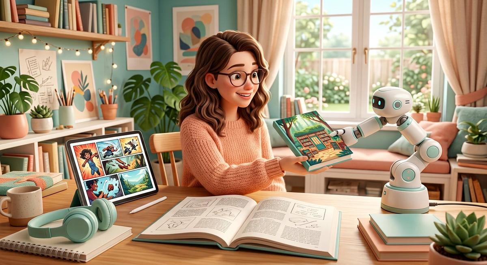
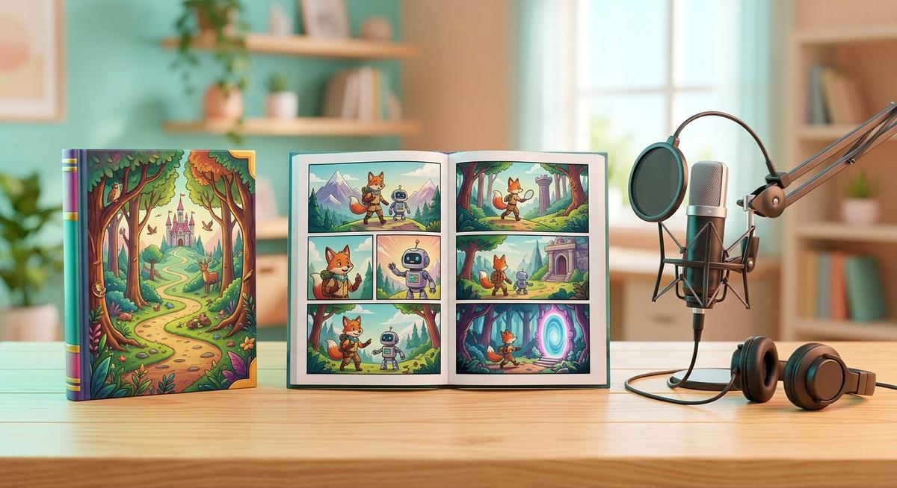
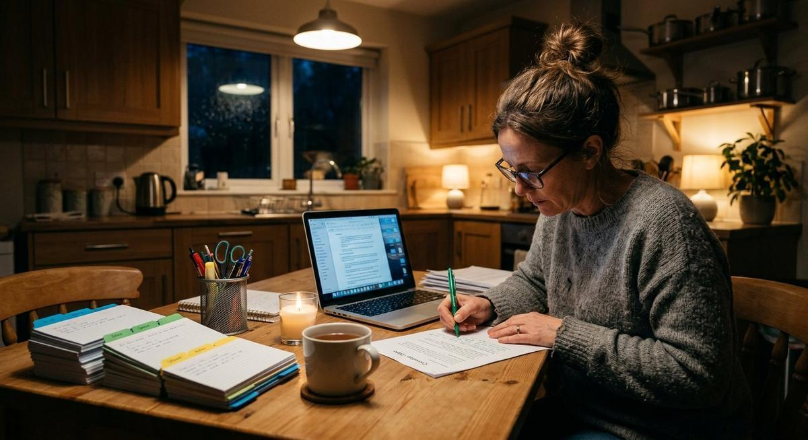
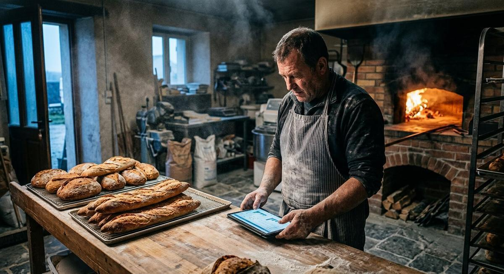

Notre « machine éditoriale » est une chaîne d'IA réelle, orchestrée par LangGraph et CrewAI. D'un sujet brut en français, elle produit un texte structuré, relu par un humain, mis en page et prêt pour l'impression ou Kindle. Voici comment, étape par étape — avec un cas réel.

« Je n'ai jamais touché à un traitement de texte. L'équipe a transformé mes souvenirs dictés en un livre relié de 112 pages que mes petits-enfants se disputent. » — Michel, 72 ans, atelier « Mémoire de quartier »

Chaque bloc est un agent logiciel spécialisé (rédacteur, correcteur, maquettiste…). Cliquez pour voir le document évoluer à chaque étape, avec l'outil utilisé et le temps réel constaté sur nos ateliers.
Veille du matin, script d'épisode, miniature, sous-titres : la chaîne prépare, vous enregistrez. Votre voix, votre visage, vos opinions — dix fois plus de contenu.
Relecture de cohérence, synopsis alternatifs, bible des personnages tenue à jour, mise en page Kindle : la machine relit, propose et formate. Vous gardez la plume.

Fiches de révision, QCM, plans différenciés, corpus de documents interrogeable en local : préparez une séance complète en une soirée, sans envoyer un seul devoir d'élève dans le cloud.

Documentation, réponses support, propositions commerciales : une agence d'agents sur vos serveurs, qui réutilise vos trames — et que vous pouvez éteindre.
On définit des agents avec un rôle précis (« rédacteur », « correcteur », « maquettiste ») et une tâche. CrewAI les fait travailler ensemble, chacun passant son travail au suivant. C'est notre équipe virtuelle de rédaction.
LangGraph décrit la chaîne comme un graphe : qui fait quoi, dans quel ordre, que faire en cas d'erreur, où intervient l'humain. C'est lui qui garantit qu'aucun livre ne part à l'impression sans validation.